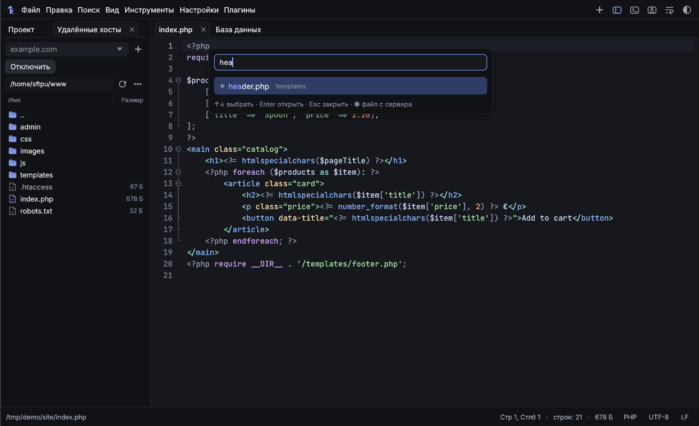
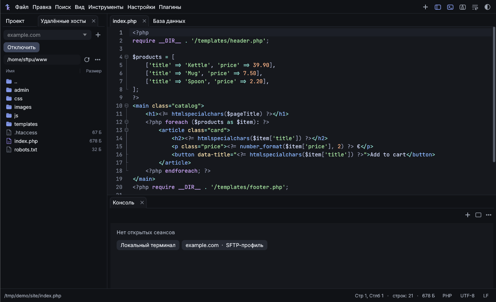
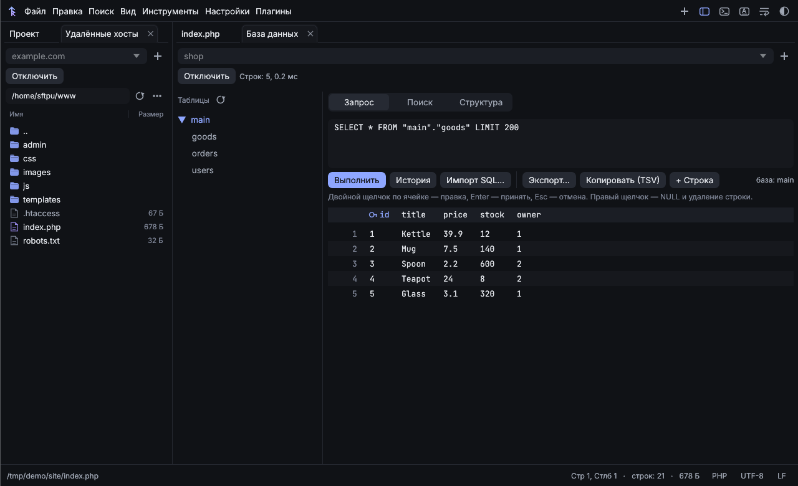
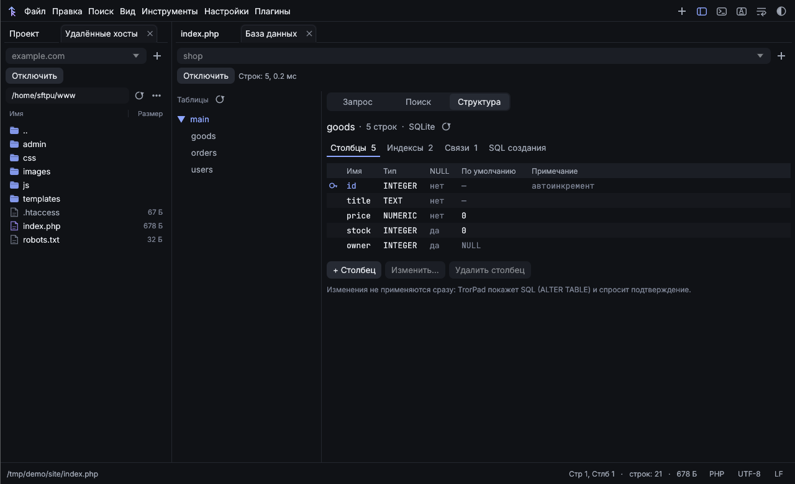

Установка
Готовые файлы каждой версии — на странице выпусков. TrorPad — это один файл программы, ему не нужны среды выполнения и дополнительные библиотеки.
Windows
trorpad-setup.exe устанавливает программу с ярлыком в меню «Пуск» и пунктом «Открыть в TrorPad» в меню файлов. trorpad.exe работает без установки.
Файлы пока не подписаны сертификатом, поэтому SmartScreen сначала спросит: нажмите «Подробнее», затем «Выполнить в любом случае».
macOS
Распакуйте TrorPad-macos.zip и перенесите TrorPad.app в «Программы».
При первом запуске щёлкните программу правой кнопкой и выберите «Открыть» или выполните xattr -dr com.apple.quarantine /Applications/TrorPad.app.
Linux
Скачайте trorpad-linux-x86_64, сделайте файл исполняемым и запустите:
chmod +x trorpad-linux-x86_64
./trorpad-linux-x86_64Через менеджер пакетов
Scoop в Windows:
scoop bucket add trorpad https://github.com/Jozef2J/tror
scoop install trorpadHomebrew в macOS (приложение) и в Linux (файл программы):
brew tap jozef2j/tror https://github.com/Jozef2J/tror
brew install --cask trorpad # macOS
brew install trorpad # LinuxПри такой установке TrorPad не обновляет себя сам: используйте scoop update trorpad или brew upgrade trorpad.
Первые шаги
Откройте папку сочетанием Ctrl+Shift+O (или перетащите её на окно) — она станет проектом слева. Файлы открываются двойным щелчком; файл, брошенный на окно, открывается в новой вкладке.
Искать файлы в дереве не обязательно. Нажмите Ctrl+P и наберите несколько букв имени: в списке открытые вкладки, файлы проекта и файлы подключённого сервера. Начните запрос с >, чтобы выполнить любую команду по названию, или с :, чтобы перейти к строке. F1 открывает то же окно сразу со списком команд.

Панели перетаскиваются за вкладку, пристыковываются к любому краю, открепляются в отдельное окно или закрываются. Вид → Сбросить расположение панелей возвращает стандартную раскладку.
Серверы
Откройте Удалённые хосты клавишей F8, нажмите + и заполните профиль: протокол (SFTP, FTP или FTPS), адрес, пользователя, пароль или ключ и папку, которую открывать. Поддерживаются ключи OpenSSH и PuTTY (.ppk). Если сайты уже записаны в FileZilla или WinSCP, нажмите Импорт… в окне профилей.

Правка файлов на сервере
Файл, открытый с сервера, сохраняется обратно по Ctrl+S. Перед записью TrorPad проверяет, не изменил ли кто-то файл на сервере после того, как вы его открыли, и если изменил — предлагает сравнить версии или перезаписать. Прежняя версия с сервера сохраняется локально (Файл → Резервные копии с серверов). Новая версия загружается под временным именем и затем переименовывается, поэтому обрыв связи не оставит на сервере недописанный файл.
Передача файлов
- Перетаскивайте файлы и папки между сервером, проектом и рабочим столом. Для больших передач открывается окно с ходом, паузой и отменой.
- Правый щелчок по файлу: Скачать в папку…, Скачать как…, права доступа, переименование, архивы.
- Сравнить с версией на сервере (в меню вкладки) показывает, чем локальный файл отличается от файла на сервере.
- Синхронизация папок загружает или скачивает только изменённое, с масками «включить» и «исключить».
Пароли хранятся в системном хранилище (диспетчер учётных данных Windows, связка ключей macOS, Secret Service в Linux), а не в файле настроек.
Консоль
F9 открывает консоль. Профиль сервера из Удалённых хостов открывается как SSH-сеанс одним щелчком; профили Telnet и Mosh и локальный терминал (PowerShell, bash или zsh) — в меню +. Сеансы открываются во вкладках, цветовую схему и шрифт можно задать для каждого профиля.
Базы данных
Откройте Вид → База данных, создайте подключение (MySQL/MariaDB, PostgreSQL или файл SQLite) и нажмите Подключить. Подключение может идти через SSH-туннель профиля сервера и по TLS.

- Запрос выполняет SQL по Ctrl+Enter; выделенный фрагмент выполняется отдельно. Прошлые запросы — в Истории.
- Поиск находит значение во всех таблицах базы без SQL.
- Структура показывает столбцы, индексы, внешние ключи и SQL создания таблицы. Столбцы можно добавлять, менять и удалять: TrorPad показывает
ALTER TABLE, который выполнит, и ждёт подтверждения. - Импорт дампов SQL и файлов CSV; экспорт результата в CSV, JSON и SQL.

Редактор
- Открывает файлы от 50 МБ без задержек и подсвечивает около 200 языков.
- Поиск и замена в файле (Ctrl+F, Ctrl+H) или по всему проекту (Ctrl+Shift+F), с регулярными выражениями. Перед заменой на диске TrorPad сохраняет копии, чтобы её можно было отменить.
- Несколько курсоров: щелчок с Ctrl, Ctrl+Alt+↓ или перетаскивание с Alt для выделения столбцом. Tab и Shift+Tab сдвигают все выделенные строки.
- Сворачивание блоков, закладки (Ctrl+F2, F2), именованные макросы (Ctrl+Shift+R), сравнение файлов.
- Визуальный редактор (Ctrl+Shift+E) правит страницы HTML, PHP и Twig как оформленный текст и не трогает блоки PHP и Twig. Текст из Word и Google Docs вставляется со структурой, но без цветов и шрифтов.
- Несохранённая работа переживает сбой: при следующем запуске TrorPad восстановит вкладки.
Горячие клавиши
Самые нужные. Все сочетания меняются в Настройки → Горячие клавиши; в macOS вместо Ctrl — ⌘.
| Клавиши | Действие |
|---|---|
| Ctrl+P | Быстрое открытие файла |
| F1 | Палитра команд |
| Ctrl+S | Сохранить (файлы с сервера — на сервер) |
| Ctrl+Shift+T | Открыть закрытую вкладку |
| Ctrl+F / Ctrl+H | Найти / заменить |
| Ctrl+Shift+F | Найти в файлах проекта |
| Ctrl+G | Перейти к строке |
| Ctrl+Shift+D / Ctrl+Shift+K | Дублировать / удалить строку |
| Alt+↑ / Alt+↓ | Переместить строку вверх / вниз |
| Alt+Z | Перенос строк |
| F7 / F8 / F9 | Проект / удалённые хосты / консоль |
| F12 | Предпросмотр в браузере |
| Ctrl++ / Ctrl+− / Ctrl+0 | Размер шрифта редактора |
Плагины
Плагины пишутся на Rust и собираются в WebAssembly. Плагин работает в песочнице и получает только те разрешения, которые запросил и которые вы приняли при установке: файлы проекта, сеть, профили серверов или базы данных. Пароли плагинам не передаются никогда.
Установка — Плагины → Управление плагинами… → Установить из zip…. Чтобы написать свой, начните с описания SDK (на английском) и примера text-tools. Краткая справка на русском лежит в папке плагинов: Плагины → Открыть папку плагинов.
Настройки, обновления и приватность
Настройки — в меню Настройки (Ctrl+,): тема, шрифты, цвета, горячие клавиши, язык (русский или английский) и другое.
TrorPad проверяет на GitHub, не вышла ли новая версия, и ставит её по кнопке; проверку можно выключить. Больше программа никуда ничего не отправляет: ни телеметрии, ни учётных записей. Подробности — в политике конфиденциальности.
Нашли ошибку или чего-то не хватает? Напишите на GitHub. Если TrorPad упал, при следующем запуске он откроет отчёт о сбое — приложите его к сообщению.